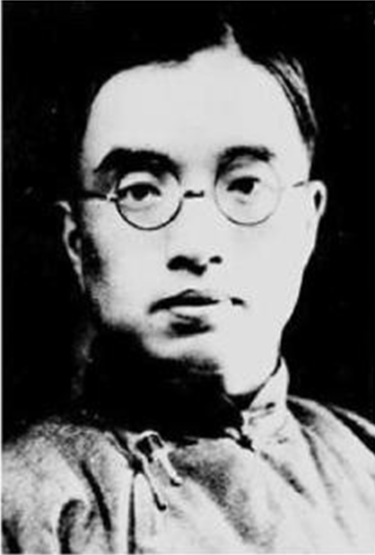

预习导学

1.作者简介:
朱自清（1898-1948），原名朱自华，字佩弦。1916年中学毕业后成功考入北京大学预科。1919年开始发表诗歌。1921年，加入文学研究会，成为“为人生”代表作家。1922年，与叶圣陶等创办了我国新文学史上第一个诗刊——《诗》月刊，倡导新诗。次年，发表长诗《毁灭》，引起当时诗坛广泛注意，继而写《桨声灯影里的秦淮河》，被誉为“白话美术文的模范”。1924年，诗文集《踪迹》出版。1925年，应清华大学之聘，任中文系教授。创作由诗歌转向散文，同时致力于古典文学研究。“三·一八”惨案后，他撰写《执政府大屠杀记》等文章，声讨军阀政府暴行。1928年，第一部散文集《背影》出版。